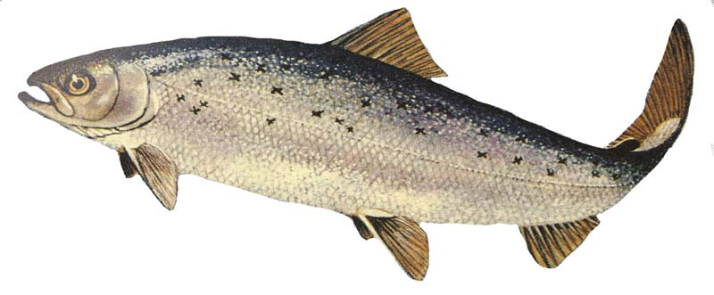
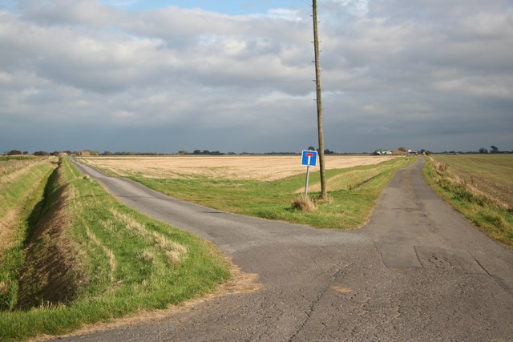

Slaying the Salmon of Doubt
(...and introducing the lobster of uncertainty)
A story about how a team of enterprise developers worked their way upstream. Told first at OpenStack Paris 2014 on the How To Contribute track.
Thom Leggett
IRC: tteggel
Twitter: @thomleg
Email: thom@tteggel.org
This story is based on actual events. In certain cases incidents, characters and timelines have been changed for dramatic purposes. Certain characters may be composites, or entirely fictitious.
Introductions
(...and who is the Salmon of Doubt?)

The Fork
(...and the knife.)

Silos
(...and an aside on the importance of documentation.)
There are n=3 people on the team, Alice, Bob and Quentin. Quentin asks a question. There are 5 ways he can get an answer:
- Q: by finding it himself.
- AQ: by asking Alice who tells him immediately.
- BQ: by asking Bob who tells him immediately.
- BAQ: by asking Alice who has to ask Bob.
- ABQ: by asking Bob who has to ask Alice.
| n | possible interactions |
|---|---|
| 2 | 2 |
| 3 | 5 |
| 4 | 16 |
| 5 | 65 |
| 6 | 326 |
| 7 | 1957 |
| 8 | 13 700 |
| 9 | 109 601 |
| 10 | 986 410 |
| 11 | 9 864 101 |
| 12 | 108 505 112 |
Interrupt Driven Development
(...and the emergence of a sentry)

“My goal for the next six months is to commit as much code upstream as I would have committed in an afternoon in my last job.”